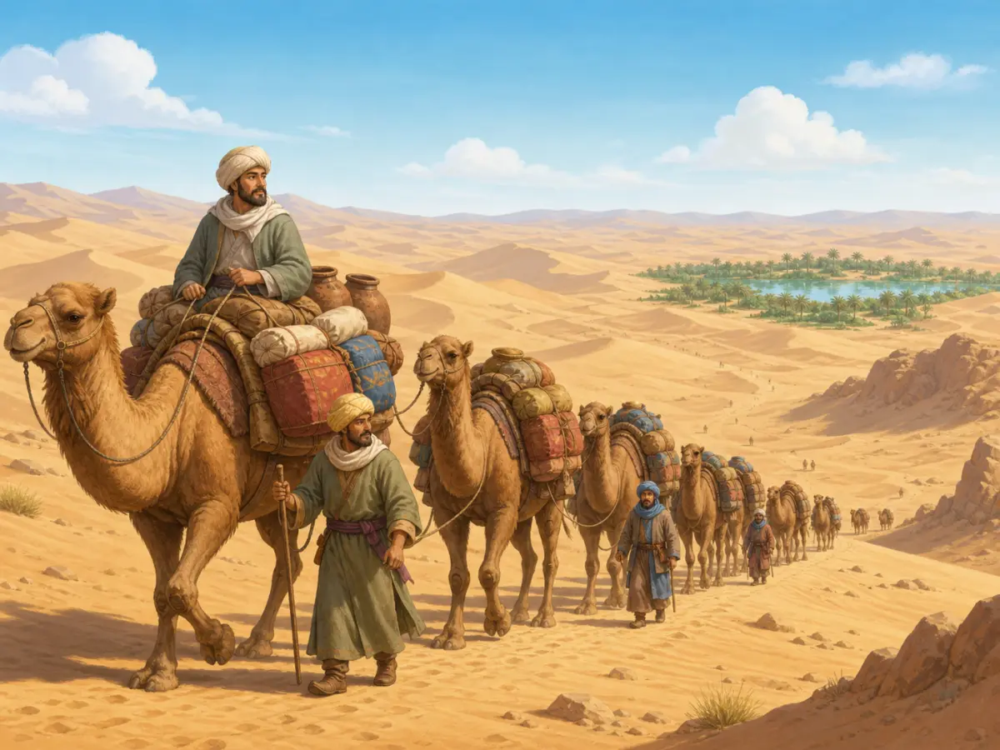
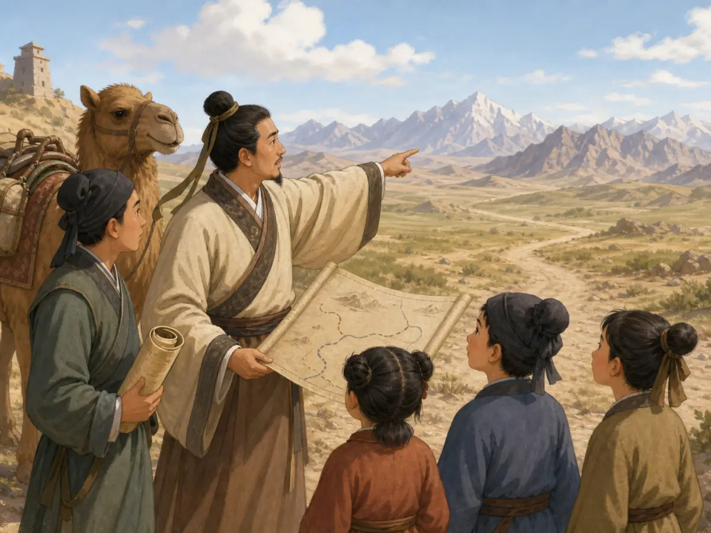
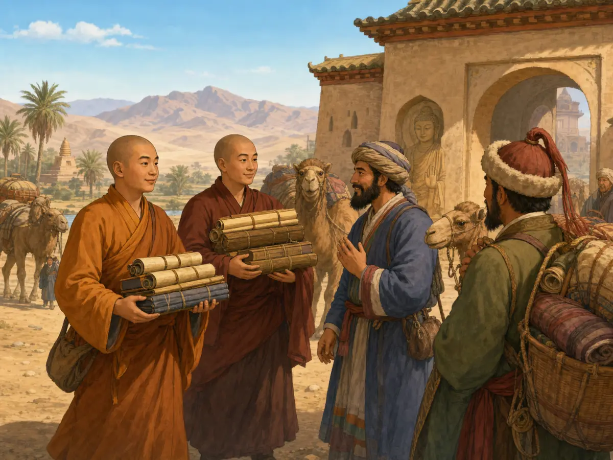
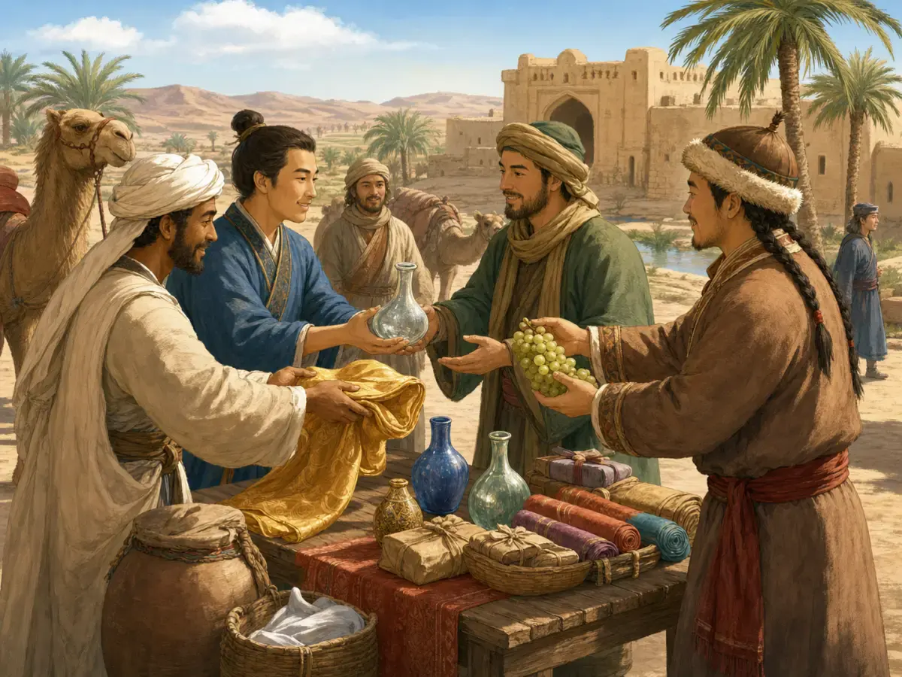

一匹中国丝绸，怎么走了那么远？
How Did Chinese Silk Travel So Far?
Page 1
从一个人手里，交到另一个人手里
From One Pair of Hands to Another

A camel caravan loaded with bundles of goods travels toward an oasis in the desert.
两千多年前，中国制作的丝绸已经能走到非常遥远的地方。Hàn cháo · 从公元前206年延续到公元220年的中国重要朝代。的中国丝织品甚至在远至埃及的地方被发现过。可是，从中国一路往西，有沙漠、有草原、有大河，还有积雪的高山。那时候没有火车，没有卡车，也没有飞机。
一匹丝绸，究竟怎么走过这么远的路？答案是：它通常不需要跟着同一个人走到底。
一支商队可能带着丝绸向西走。马和骆驼驮着货物，走过一段长路以后，来到一座城或者绿洲。这里有水，有粮食，也有市场。赶了许多天路的人可以休息，牲畜可以喝水吃草，商人也可以把带来的货物拿出来卖。
一位商人买下了丝绸。于是，这匹丝绸开始了下一段路。到了另一座城，它又可能被卖给另外一个人。
这就是Sīchóu Zhī Lù · 连接中国、中亚和更远地区的多条古代交通与贸易路线。非常重要的一点。它并不是一条从中国笔直通到欧洲的大道，而是许多道路连成的一张网。城镇、绿洲、山口和市场，把一段路接到下一段路。很多走了很远的货物，其实是在不同商人手里一站一站传过去的。
有时候，一匹丝绸走过的路，比任何一个带过它的人都远。
More than two thousand years ago, silk made in China could travel astonishingly far. Chinese silk from the Han period has been found far beyond China, even in places as distant as Egypt. Think about that journey. There were no trains, trucks, or airplanes. Between China and lands far to the west stood deserts, grasslands, rivers, and mountains covered with snow.
So how did a piece of silk get all the way across? Usually, it did not travel with one person.
A merchant might carry silk westward with a caravan of horses or camels until reaching a town or oasis. There, the travelers could find water and food, rest their animals, and sell some of their goods.
Another merchant might buy the silk. Then the cloth started another part of its journey. At the next city, it could change hands again.
This is one of the most important things to understand about the Sīchóu Zhī Lù · 丝绸之路 · A network of old routes linking China, Central Asia, and lands farther west.. They were not one enormous highway stretching straight from China to Europe. They were a network of many routes, linked by towns, markets, mountain passes, river crossings, and places where travelers could stop. Valuable goods often moved enormous distances through a chain of different merchants.
A piece of silk might travel farther than almost anyone who carried it.
Page 2
张骞出发的时候，并不是去卖丝绸
A Traveler Who Wasn't Looking for Silk

Zhang Qian holds a scroll map while his companions look toward distant snow-covered mountains.
两千多年前，有一个叫Zhāng Qiān · 汉代出使西域、带回中亚信息的使者。的人从汉朝出发向西远行。皇帝交给他的任务并不是做生意，也不是让他去“开通丝绸之路”。他要去寻找大月氏，希望对方能够和汉朝结盟。
可是，张骞刚走出去不久，就被Xiōngnú · 古代生活在中国北方草原及其周边的强大游牧联盟。抓住了。《史记》记载，他在那里被扣留了十多年。后来终于有机会逃走时，他却没有马上掉头回家，而是继续往西走，寻找原来的目的地。
他终于见到了大月氏，可对方已经在新的地方安顿下来，并不愿意按照汉朝原来的计划一起作战。
张骞离开家整整十三年以后，终于回到了汉朝。《史记》说，最开始和他一起出发的有一百多人，最后一起回来的只剩两个人。
他没有完成原来最重要的任务。可是，他带回了一样没有人料到的东西：关于远方的消息。
One of the most famous travelers connected with these routes was a man named Zhāng Qiān · 张骞 · The Han envoy whose difficult journeys brought the court new information about Central Asia.. More than two thousand years ago, a Hàn cháo · 汉朝 · A major Chinese dynasty that lasted from 206 BCE to 220 CE. sent him west. But Zhang Qian was not going shopping, and he had not been ordered to open a trade road. He was looking for another people, the Yuezhi, hoping they might become allies of the Han.
The journey went badly almost at once. Zhang Qian had to pass through land controlled by the Xiōngnú · 匈奴 · A powerful confederation based in the northern grasslands in ancient times., and they captured him. According to the Shiji, he was held for more than ten years. Eventually he escaped and continued west instead of simply going home.
He reached kingdoms the Han court knew little about and finally found the Yuezhi, but they did not want the alliance he had come to ask for.
After thirteen years away, Zhang Qian finally returned. Of the more than one hundred people who had left with his mission, the Shiji says only two returned together.
He had not completed his original job. But he had brought back something else: information.
Page 3
山那边有什么？
What Was Beyond the Mountains?

Two monks carrying scrolls speak with travelers beside camels loaded with goods.
张骞告诉汉朝皇帝，在遥远的西方还有许多城市和国家，那里有人种田，也有汉朝非常看重的好马。
那些道路并不是张骞走过以后才突然出现的。在他出发以前，中亚各地的人早就在互相来往和交换东西。不过，张骞回来以后，汉朝对西方世界了解得更多了，官方往来增加，远距离的贸易也变得更加活跃。
丝绸向西走，别的东西也向东来。汉朝人很想得到中亚的良马，玻璃器和其他珍贵物品也进入中国。许多世纪里，跟着商人和旅行者一起移动的，还不只是货物。植物、图案、音乐、语言和宗教，也在一个地方遇见另一个地方。
有的东西走得远，有的只走一小段。有的货物被卖掉以后继续旅行，有的图案却被当地工匠看见以后，变成了新的样子。
Zhang Qian told the Han court about cities, farming lands, people, and powerful horses in regions far to the west. The Han government now knew much more about Central Asia than it had before.
The roads themselves were older than Zhang Qian. Traders and communities had already been exchanging goods across parts of Central Asia long before his journey. But after his missions, contact between the Han empire and western regions grew much stronger, and long-distance trade expanded.
Silk traveled west. Other things traveled east. The Han court especially wanted strong horses from Central Asia. Glassware and other valuable objects came toward China. Over the centuries, plants, artistic designs, music, languages, and religious ideas also moved between communities along the routes.
Not everything traveled the whole distance. A horse might stop in one region. A glass cup might move farther. A design seen on one object might be copied by a craftsperson somewhere else.
The Silk Roads were always moving things—and changing them along the way.
Page 4
下一座城
The Next Town

Merchants exchange silk, glass vessels, grapes, and bundled goods in an oasis market.
再回到开头那匹丝绸。商队走了很多天，终于到达一片绿洲。马和骆驼停下来喝水，赶路的人找到食物和住处。市场里，丝绸被打开，一位买家看中了它，把它买走。
原来那位商人的旅程，也许就在这里结束了。可是丝绸还可以继续走。
它跟着新的主人去了下一座城，又到了另一个市场，也许还会再交到另一个人的手里。就这样，一件在中国制作的东西，可以一点一点走到几千公里之外。
所谓“丝绸之路”，并不是一条长得看不到尽头的大路。真正把遥远地方连起来的，是一段又一段道路、一座又一座城市，还有一次又一次从一个人手中交到另一个人手中的旅行。
Now return to that piece of silk. A caravan reaches an oasis after days of travel. The animals need water. The travelers need food and sleep. In the market, the silk is unrolled. Someone looks at it, likes it, and buys it.
The first merchant's journey may end there. The silk's journey does not.
It leaves with someone else, toward another town and another market. Then perhaps another person carries it farther. That is how something made in one part of the world could end up thousands of miles away.
The Silk Roads were not really one road, and silk did not travel them by itself. Their great distances were crossed in smaller pieces, from town to town and from one pair of hands to the next.